Driven engineering student with dual degrees from École Polytechnique de Bruxelles and Polytechnique Montréal, specializing in quantum physics, photonics, optimization methods, and programming. Eager to apply my diverse skill set to drive innovations in technology
Get To Know More
About Me
Education
Polytechnique Montréal
Research MS in Engineering Physics
2022 - Present
GPA : 4.0/4.0
Coursework : Quantum Optics, Quantum Information, Ultrafast Photonics, A.I.: methods and algorithms, Quantum Field Theory (McGill University).
Research : Full time dedicated to a supervised research project, consisting in developing a bright source of entangled photons.
École Polytechnique de Bruxelles
MS in Engineering Physics
2021 - Present
Grade : 18.62/20
Coursework : Quantum Mechanics II, Laser Physics, Numerical Methods, Plasma Physics, Digital Electronics, Nuclear Physics.
École Polytechnique de Bruxelles
BS in Engineering Physics
2021 - Present
Honors : Magna Cum Laude
Coursework : Quantum and Statistical Physics, Linear Algebra, Quantum Mechanics I, Semiconductor Physics.
Passionate about running, particularly trail running and outdoor endurance events. Completed several marathons and recently finished my first 80km trail (3500m elevation).
Music
Guitar (10 years of formal training at the Academy of Uccle) and piano.
Tennis
Competitively ranked at C15.2 in Belgium.
Backpacking
Enjoy exploring new places, meeting people, and experiencing different cultures through travel.
Physics
Programming
Work And Associative Experience
Laboratory Instructor and Teaching Assistant
Polytechnique Montréal - Montréal, CA
2023 - Present
Led teams and evaluated initial concept projects in physical engineering (PHS1903), including pulse oximeters, infrared thermometers, wireless energy transfer systems, and laser sensing.
Served as an evaluator for Statistical Physics (PHS2111) and Biophotonics courses (GBM8802).
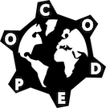
Development Cooperation Project
CAMESKIN - Kinshasa, RDC
2021 - 2022
Engineered a solar energy monitoring system tailored for the Democratic Republic of Congo’s rural regions, programming microcon- trollers, developing a Kalman filter for enhanced accuracy, and implementing a MQTT-based remote monitoring app.
The system was successfully installed in Kinshasa to monitor solar panels and batteries essential for medical storage.
Private Tutoring in Mathematics and Sciences
Brussels-Montreal
2021 - Present
Self-employed as a private tutor, providing mathematics and science lessons to high school and university students.
Delivered weekly instruction ranging from 4 to 12 hours, tailoring content to individual learning needs.
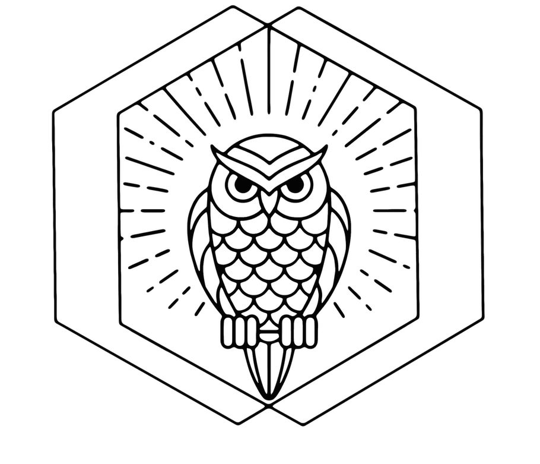
Youth Center Management
Jeugdhuis ‘t Uilekot - Brussels, BE
2018 - 2022
Managed a youth center, overseeing daily operations and event coordination.
Organized various events, enhancing community engagement and youth participation.
Handled financial management and collaborated on joint projects with the municipality of Uccle and external organizations.
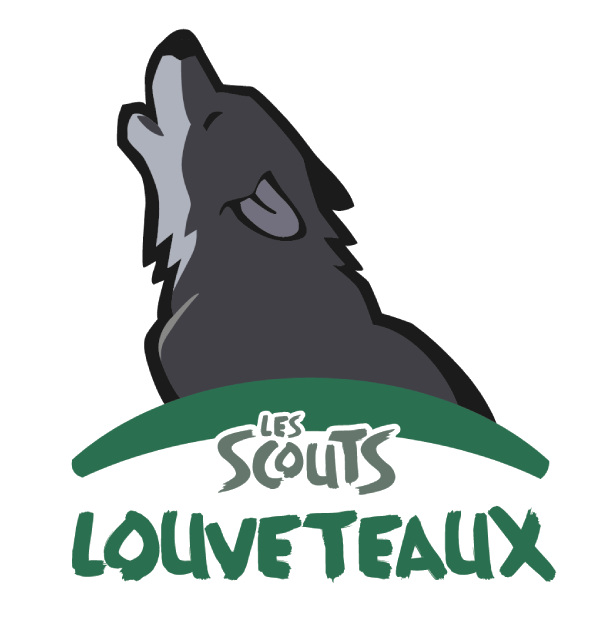
Youth Scout Leader
Rosaire - Brussels, BE
2018 - 2021
Coordinated scouting events and educational programs for 8-12-year-olds, fostering teamwork and outdoor skills.
Led the planning and execution of summer camps.
Tennis Instructor
BATD - Halle, BE
2016 - 2018
Provided individual and group tennis lessons to children, teenagers, and adults, totaling 4 to 10 hours weekly at TC Sollenbeemd, Halle, Belgium.
Conducted all tennis coaching sessions in Dutch, ensuring effective communication and instruction.
Browse some of my
Projects
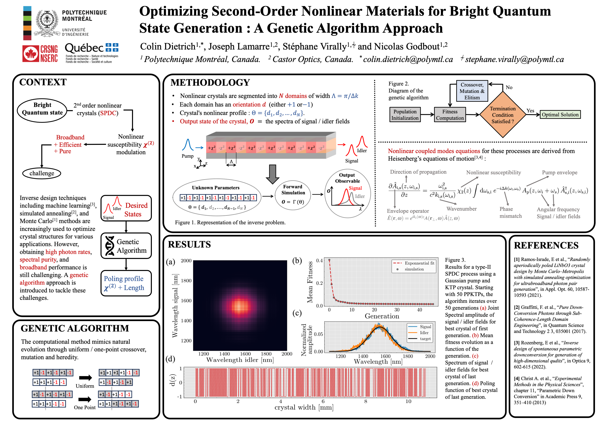
During my master's studies, I had the opportunity to present some of my research at the 7th Montreal Photonics Networking Event, focusing on the inverse design of nonlinear materials. My project centered around creating a genetic algorithm to precisely adjust second-order nonlinear materials, essential for producing entangled photons via the process of Spontaneous Parametric Down-Conversion (SPDC).
The aim of this work was to enhance the generation of entangled photons by optimizing the characteristics of nonlinear optical materials, a key step forward for technologies dependent on quantum light sources, including high-resolution imaging and accurate measurement systems.
The genetic algorithm is inspired by natural selection and evolution. It iteratively modifies the crystal structure of nonlinear materials to find the optimal configuration that maximizes the desired characteristics of the emitted entangled photon pairs. This approach is beneficial because it navigates through a vast space of potential solutions to identify the most effective material properties for photon generation, thereby contributing to the field of photonics and quantum technologies.
For more information, please see the GitHub link below and the brief article !
In my project, inspired by a previous master's thesis from Alexis Labranche's work, I've focused on developing an ultrafast Erbium-doped fiber laser system, specifically designed for quantum optics research. The main goal was to create an ultralow-noise, high peak power pulse train capable of efficiently driving nonlinear frequency mixing processes.
I built a 60.9 MHz self-starting, passively mode-locked laser, achieving a minimal intensity noise. Additionally, I integrated a broadband EDFA to amplify pulse energy to 4.2 nJ and achieve controlled spectral broadening up to 55 nm (FWHM).
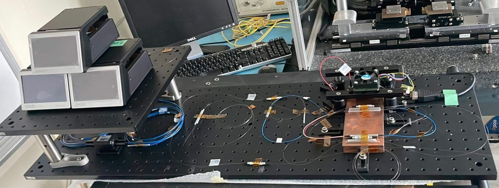
(Picture of the experimental setup.)
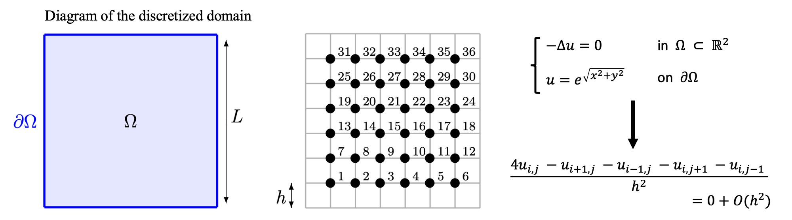
This project consists in developing a C program to solve the two-dimensional Poisson equation numerically. The focus was on modeling different shapes of membranes and solving the equation using an iterative Multi-Grid method. A key aspect of my project was optimizing the solution process with a relaxation parameter and enhancing the solver's performance by integrating a Multi-Grid preconditioner alongside the PRIMME solver.
The multi-grid method is an efficient numerical approach for solving differential equations, leveraging multiple levels of grid resolution. The core idea behind the two-grid algorithm is to perform most computational steps inexpensively, with the exception of solving with the UMFPACK direct solver on the coarse grid. The multi-grid method enhances this by iteratively applying pre-smoothing and post-smoothing on progressively coarser grids. Each new coarse grid doubles the discretization step of the old grid until a grid is coarse enough for the problem to be solved directly, significantly reducing computational costs.
For more information, please see the GitHub link below !
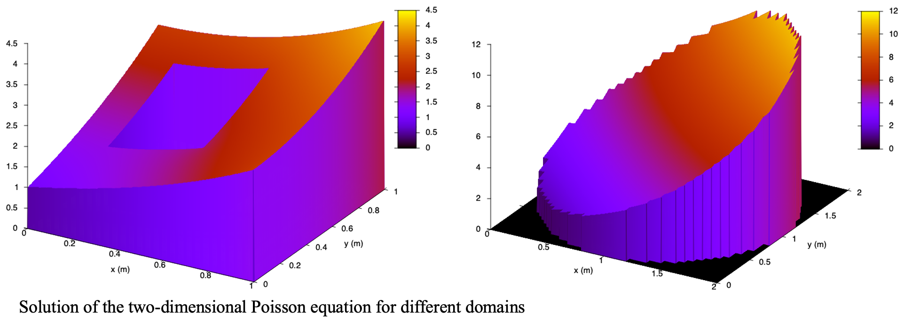
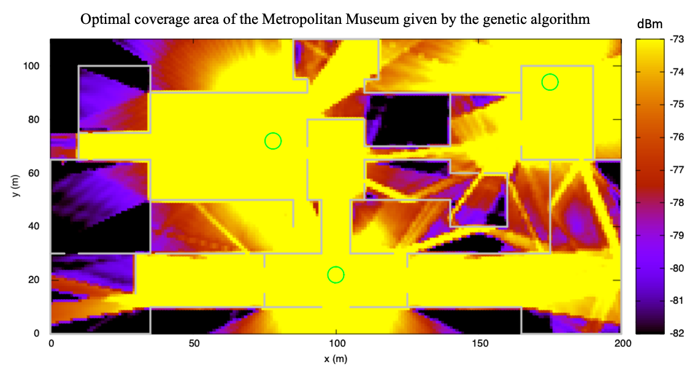
During this project I developed a ray-tracing software for analyzing electromagnetic wave propagation. The goal was to simulate how a device receives power from a Wifi access point and to map out 5G indoor small cell base station coverage areas, including the received bit rate based on the receiver's location.
To make the simulations manageable and efficient, we based our work on a few key assumptions, such as using lossless half-wavelength dipole antennas for the 5G network, assuming all transmitters and receivers were at the same height, and focusing only on horizontally propagating plane waves. We also applied the far-field approximation, which simplified the wave interactions within the environment by only considering reflections and transmissions from walls up to three times, and disregarding any diffraction or internal obstacles like furniture.
The software, developed in C++, offered three modes of operation: the first mode visualized the rays reaching a receiver and calculated the received power for specified transmitter and receiver positions; the second mode mapped out the coverage area and signal intensity, allowing for variable transmitter placements and discretization levels; and the third mode employed a genetic algorithm to determine the optimal number and placement of transmitters for maximum coverage. This optimization was particularly innovative, as it used chromosome replication techniques to avoid exhaustive positioning evaluations and didn't fix the number of sources in advance, drawing inspiration from research by C. Ting and others on wireless transmitter placement using genetic algorithms.
For more information, please see the GitHub link below !
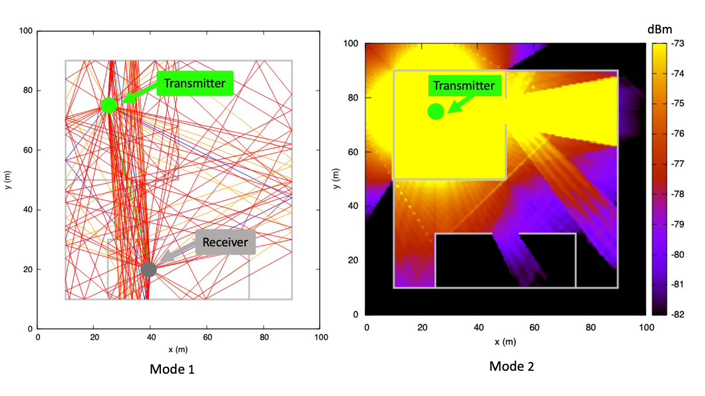
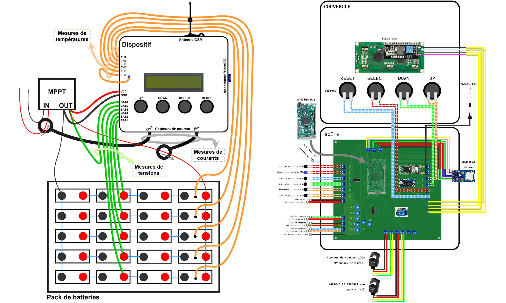
In the 2022-2023 academic year, I participated in a cooperative project with Camsekin in Kinshasa, aimed at addressing the challenges posed by the unstable electrical grid in the Democratic Republic of Congo. Camsekin, a refrigerated medical storage facility, relies heavily on solar energy due to the local grid's unreliability. Our project's goal was to create an energy monitoring system to preempt potential outages and ensure the continuous operation of this crucial infrastructure.
Developed by students from the Ecole Polytechnique de Bruxelles in partnership with CAMESKIN, the project focused on enhancing battery systems through an energy monitoring device. This pilot project was designed with the potential to be expanded to rural electrical systems where maintenance and repair could be significantly delayed and costly.
The system we developed monitors a battery pack and includes software that can be run on a computer for remote visualization of the collected data. We employed a Kalman filter for estimating the remaining battery life, modeling the battery pack as an equivalent circuit. The parameters for this model were determined using a Hybrid Pulse Power Characterization (HPPC) test and MATLAB scripts, which are accessible on a public repository.
Additionally, Python scripts were written to monitor the solar panels connected to the battery pack. These scripts compare the actual power output, measured by the device, to the theoretical power calculated from local weather data. Although an Arduino DUE microcontroller was initially used for this project, the system's design allows for adaptation to other microcontrollers.
This energy monitoring system was designed not only to enhance the use of solar systems in rural areas but also to support the CAMESKIN warehouse in Kinshasa. By monitoring the solar panels and batteries that power the cold chain for medicine preservation, the project contributes to the reliability of medical supplies in the region.
For more information, please see the GitHub link below !
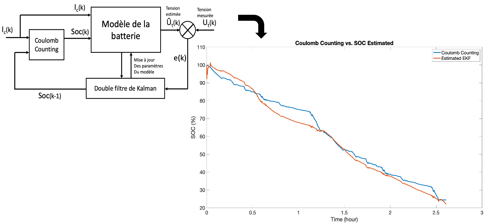
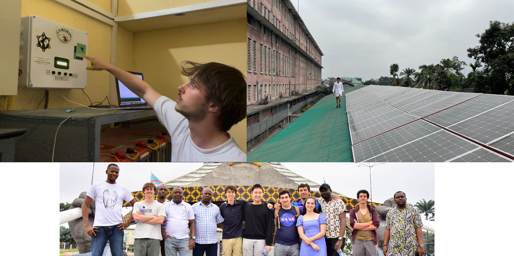
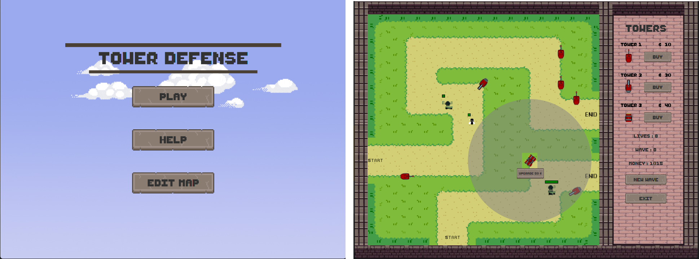
This Tower Defense game, developed in Java, challenges players to survive numerous waves of diverse monsters by strategically placing and upgrading various weapons across multiple maps. Each monster possesses unique speed and health attributes, adding complexity to the defense strategy. Players earn in-game currency by defeating monsters, which can be used to upgrade weapons and enhance their defense capabilities. A standout feature of the game is the ability for players to design their own maps, offering a personalized gaming experience and endless replayability.
For more information, please see the GitHub link below !
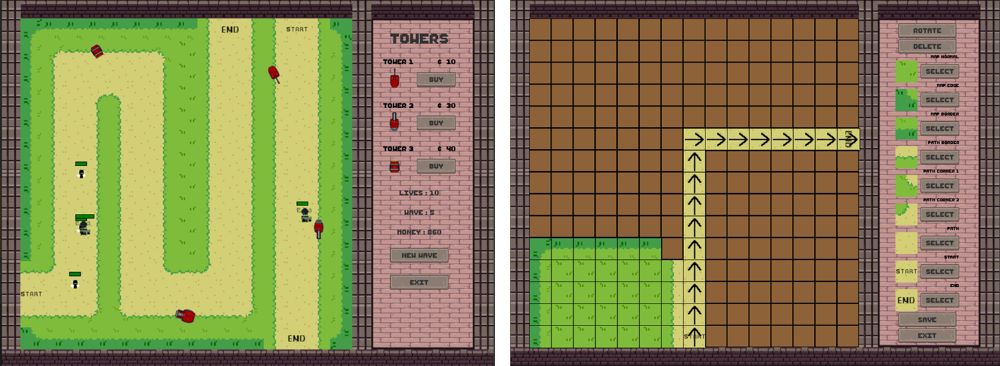
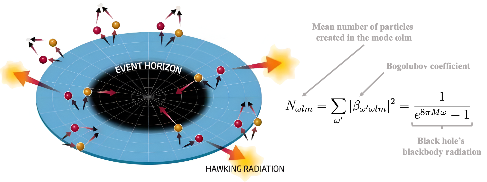
My interest has always been in figuring out how things around me work. This curiosity led me down an engineering path in physics, where every answer brought more questions. Along the way, I developed a deep interest in quantum mechanics, the cornerstone of my understanding of the universe. However, my penchant for tangible evidence made me more of an experimentalist than a theorist.
Enrolling in Brandenberger Robert's course on quantum field theory at McGill University was an opportunity for me in my quest for knowledge. The course introduced me to the nuances of a framework that, despite its relative youth and certain vulnerabilities, forms the foundation of the powerful Standard Model of particle physics and holds out the possibility of a unified theory.
In this context I wrote an essay on Hawking radiation, a theoretical prediction where black holes emit thermal black body radiation. Following Stephen Hawking's seminal paper, I used a simplified model involving massless scalar fields for a Schwarzschild black hole to deduce the black hole's blackbody radiation.
For additional informations, please see the essay linked below !
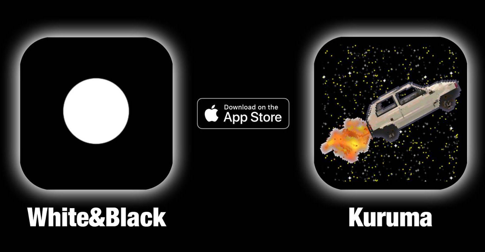
During my last year of high school (at 17), my brother and I were passionate about computing. We challenged ourselves to each program a video game within a few months with the goal of posting them on the Apple Store under the same license.
As a result, a few months later, after a lot of work and a tremendous amount of learning, we each published our respective games on the App Store.
He created a minimalist game focused on keeping balls bouncing for as long as possible, and I developed a retro arcade game named KURUMA (meaning "car" in Japanese).
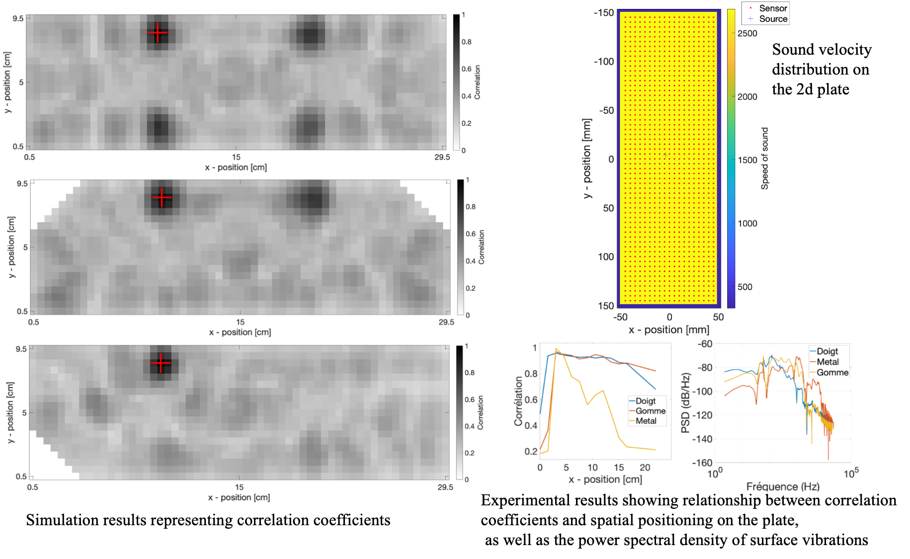
During this project, I developed a tactile piano using a rectangular plexiglass surface and a piezoelectric sensor capable of detecting touch impulses through acoustic wave time reversal.
A first step was to simulate the system using MATLAB and k-Wave to characterize its resolution and contrast, utilizing a piezoelectric sensor for signal capture.
This setup allows for the localization of touches by correlating temporally reversed test impacts with recorded signals. The prototype serves as a portable piano with one octave, requiring precise tapping for accurate note production.
Despite good spatial resolution, the effectiveness of touch detection—especially with keys spaced 3 cm apart—highlighted the challenge of achieving sufficient contrast for optimal resolution characterization.